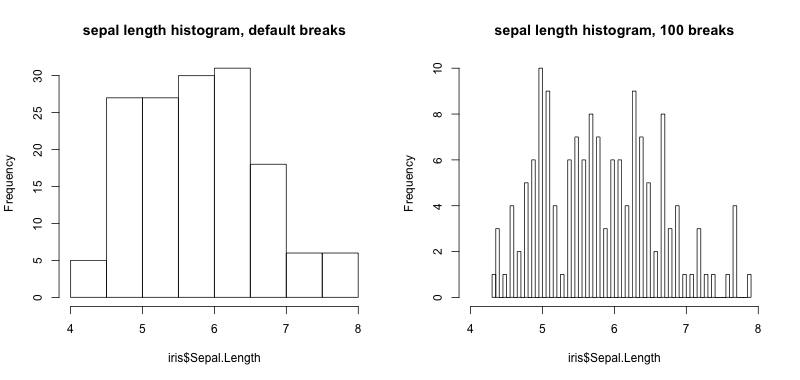
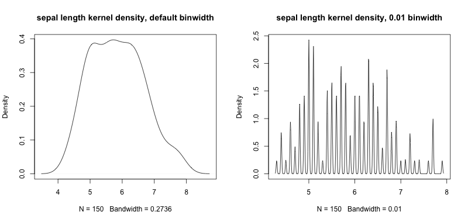
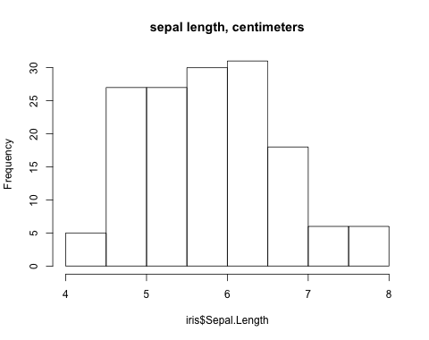
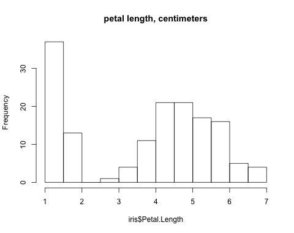
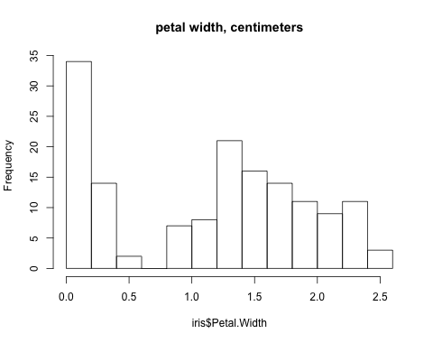

Hearing Data with Sonic Histograms
Monday December 14, 2015
You can see an iris, and you can smell an iris, and you can measure the length and width of 150 iris sepals and petals... but can you hear the iris data?

Histograms are a great way to get a sense for the distribution of a set of values. The view you get depends on how wide your bars are.

Both those histograms look pretty good, but audio isn't so boxy. A cousin of the histogram, kernel density estimation (KDE) seems more like audio. Like a histogram, it can be more or less "smooth".

Stealing the idea of KDE, we can adapt it for audio. We'll just add up audio pulses that are positioned in time to represent values.
We can use "wide" audio points or "narrow" audio points .
Combining a bunch of wide audio points, we get a "smoother" audio histogram. And if we combine narrow audio points, we get a more "discrete" sounding histogram.
Adding an audio axis label and some sonic tick marks, we get serviceable audio histograms that you can compare to their visible counterparts.




So yes, it kind of works! You can certainly hear bimodality, and even differentiate between the first two distributions if you listen carefully. I probably won't switch from visualizations to sonifications, but it's a fun things to explore!
Thanks to Spotify's Monthly Music Hackathon NYC (@musichackathon) Sound Visualization & Data Sonification Hackathon for providing the push to do this. There's video on Livestream (I'm on from about 5:30 to 10:30) but ironically the audio doesn't seem to be working. Thanks also to Thomas Levine for showing me the tuneR library for R which let me jump in and start making sounds really quickly.
This code was hacked together quickly and is not what you'd call "production grade". It uses the Mac say and also ffmpeg via system, but it's otherwise R that might work for you if you want to try it.
# install.packages("tuneR") # install if not installed
library("tuneR")
setWavPlayer('/usr/bin/afplay') # on Mac
point_at <- function(value, # data value
lowest, # data range min
highest, # data range max
duration, # seconds
point_width, # seconds for +/- 3 SD (points are normal)
point_freq=440, sample_rate=44100) {
point_width_samples <- point_width * sample_rate
point <- sine(point_freq, point_width_samples, stereo=TRUE)
filter <- dnorm(seq_along(point), mean = length(point)/2, sd = length(point)/6)
filter <- filter / max(filter)
point <- point * filter
duration <- duration * sample_rate
data_range <- highest - lowest
left_offset <- value - lowest
peak_position <- (left_offset / data_range) * duration
left_padding_duration <- peak_position - length(point)/2
if (left_padding_duration > 0) {
result <- bind(silence(left_padding_duration, stereo=TRUE), point)
} else {
result <- point[abs(left_padding_duration):length(point)]
}
if (length(result) < duration) {
result <- bind(result, silence(duration - length(result), stereo=TRUE))
} else {
result <- result[1:duration]
}
result
}
points_at <- function(values, # data values
lowest, # data range min
highest, # data range max
duration, # seconds
point_width, # seconds for +/- 3 SD (points are normal)
point_freq=440, sample_rate=44100) {
result <- silence(duration * sample_rate, stereo = TRUE)
for (value in values) {
result <- result + point_at(value, lowest, highest, duration, point_width,
point_freq, sample_rate)
}
result
}
low_high <- function(values) {
breakpoints <- pretty(values)
lowest <- breakpoints[1]
highest <- breakpoints[length(breakpoints)]
c(lowest, highest)
}
normalized_sonic_hist_content <- function(values, # data values
duration=4, # seconds
point_width=0.2, # seconds for +/1 3 SD (points are normal)
point_freq=440, sample_rate=44100) {
breakpoints <- low_high(values)
lowest <- breakpoints[1]
highest <- breakpoints[2]
content <- points_at(values, lowest, highest, duration, point_width,
point_freq, sample_rate)
normalize(content)
}
sonic_hist <- function(values, # data values
main, # "title" of variable
duration=4, # seconds
point_width=0.2, # seconds for +/1 3 SD (points are normal)
point_freq=440,
legend=TRUE,
units="",
edge=TRUE, edge_freq=880, edge_duration=1000,
sample_rate=44100) {
if (missing(main)) {
main <- deparse(substitute(values))
}
breakpoints <- low_high(values)
lowest <- breakpoints[1]
highest <- breakpoints[2]
content <- normalized_sonic_hist_content(values, duration, point_width, point_freq, sample_rate)
edge_sound <- sine(edge_freq, duration=edge_duration, stereo=TRUE)
if (edge) {
content <- bind(edge_sound, content, edge_sound)
}
if (legend) {
system(paste("say", main, "in", duration, "seconds from", lowest, "to", highest, units, "-o t"))
system("ffmpeg -i t.aiff -ar 44100 t.wav")
legend_mono <- normalize(readWave("t.wav"), pcm=FALSE)
legend_stereo <- stereo(legend_mono, legend_mono)
system("rm t.aiff t.wav")
content <- bind(legend_stereo, content)
}
content
}
triple_save <- function(some_wav) {
name_prefix <- deparse(substitute(some_wav))
wav_name <- paste(name_prefix, ".wav", sep='')
mp3_name <- paste(name_prefix, ".mp3", sep='')
ogg_name <- paste(name_prefix, ".ogg", sep='')
writeWave(some_wav, wav_name)
system(paste("ffmpeg -i", wav_name, mp3_name))
system(paste("ffmpeg -i", wav_name, ogg_name))
system(paste("rm", wav_name))
}
data("iris")
iris$Sepal.Length
png('two_histograms.png', width=800, height=380)
par(mfrow=c(1, 2))
hist(iris$Sepal.Length, main="sepal length histogram, default breaks")
hist(iris$Sepal.Length, breaks=100, xlim=c(4, 8), main="sepal length histogram, 100 breaks")
dev.off()
png('two_kdes.png', width=800, height=380)
par(mfrow=c(1, 2))
plot(density(iris$Sepal.Length), main="sepal length kernel density, default binwidth")
plot(density(iris$Sepal.Length, bw=0.01), main="sepal length kernel density, 0.01 binwidth")
dev.off()
sonic_point_wide <- point_at(value=4, lowest=0, highest=8, duration=2, point_width=0.5)
triple_save(sonic_point_wide)
sonic_point_narrow <- point_at(value=4, lowest=0, highest=8, duration=2, point_width=0.05)
triple_save(sonic_point_narrow)
sonic_sepal_length_wide <- sonic_hist(iris$Sepal.Width, legend=F, edge=F, point_width=0.4)
triple_save(sonic_sepal_length_wide)
sonic_sepal_length_narrow <- sonic_hist(iris$Sepal.Width, point_width=0.05, legend=F, edge=F)
triple_save(sonic_sepal_length_narrow)
sonic_tick_mark <- sine(880, duration=1000, stereo=TRUE)
triple_save(sonic_tick_mark)
png("sepal_length.png", height=380, width=480)
hist(iris$Sepal.Length, main="sepal length, centimeters")
dev.off()
sonic_sepal_length <- sonic_hist(iris$Sepal.Length, main="sepal length", units="centimeters")
triple_save(sonic_sepal_length)
png("sepal_width.png", height=380, width=480)
hist(iris$Sepal.Width, main="sepal width, centimeters")
dev.off()
sonic_sepal_width <- sonic_hist(iris$Sepal.Width, main="sepal width", units="centimeters")
triple_save(sonic_sepal_width)
png("petal_length.png", height=380, width=480)
hist(iris$Petal.Length, main="petal length, centimeters")
dev.off()
sonic_petal_length <- sonic_hist(iris$Petal.Length, main="petal length", units="centimeters")
triple_save(sonic_petal_length)
png("petal_width.png", height=380, width=480)
hist(iris$Petal.Width, main="petal width, centimeters")
dev.off()
sonic_petal_width <- sonic_hist(iris$Petal.Width, main="petal width", units="centimeters")
triple_save(sonic_petal_width)If you're having any problems with your sonic histograms, you can adjust them with a sonic screwdriver.